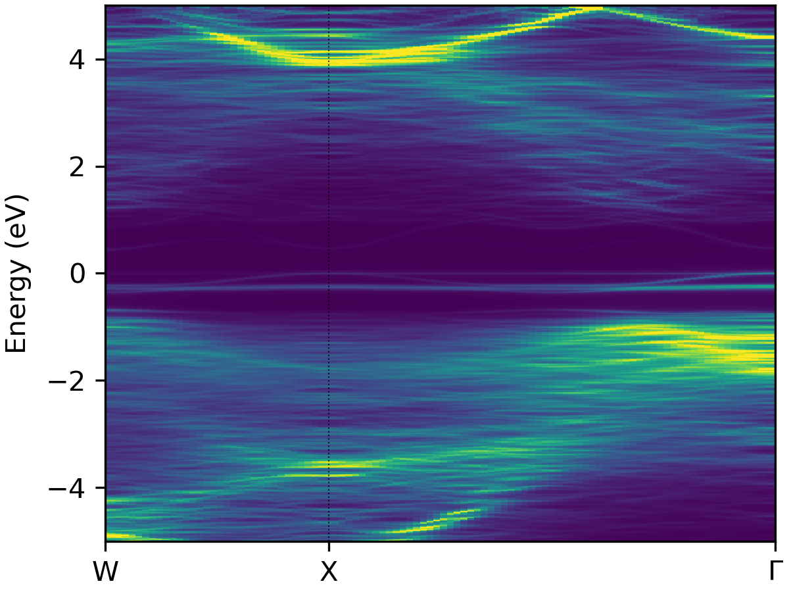

Tutorial#
Tip
See the easyunfold YouTube tutorial for a quick overview of the theory of band structure unfolding, and a walkthrough of the calculation & analysis workflow with easyunfold.
The main goal of easyunfold is to make the band structure unfolding workflow easier to implement and
less error-prone. To generate an unfolded band structure, one typically needs to perform the following
steps:
Create a primitive unit cell, and generate a band structure k-point path corresponding to this primitive cell.
Create a supercell (e.g. disordered, defective, surface slab etc.), and obtain its optimised structure.
Generate a series of k-points for the supercell to be calculated.
Perform a band structure calculation with the supercell, and save its wavefunction output to file.
Post-process the supercell wavefunction to obtain the unfolded band structure in the k-point path of the primitive unit cell.
These generation and analysis steps are automated in easyunfold, with only the primitive unit cell and
supercell structures required as inputs from the user.
Typically, the supercell comprises some form of symmetry-breaking relative to the primitive cell, such as defects, disorder (e.g. special quasi-random structures (SQS) for site disorder – other forms of disorder such as magnetic, dynamic/vibrational, polar, elastic etc. also possible), or a surface/interface slab. In all cases, the supercell symmetry is lowered compared to the pristine primitive cell. Hence, for a given k-point path in the primitive cell Brillouin Zone, additional k-points are required to be sampled for the supercell, and the extracted spectral weights need to be appropriately averaged to obtain the correct effective band structure (EBS). See the docs Theory page and/or JOSS paper for more details.
At the moment, two plane-wave DFT codes, VASP[1] and CASTEP[2], are supported. In principle, support can be easily added for other plane-wave codes if the wavefunction can be read in.
Below is a guide for performing band structure unfolding when using VASP.
Step 1 - Generate the k-point path for the primitive cell#
In this step, we first generate the band structure k-point path we want to calculate. To do this, we use the prototype high-symmetry primitive structure to get the corresponding k-point path.
Note
For disordered materials, this primitive cell should be the idealised primitive cell of the material (i.e. the primitive structure where all disordered sites have been set equal), not the SQS cell, and for defect supercells this should be the primitive cell of the host compound, not the bulk supercell.
This can be done by well-established packages such as seekpath or sumo. Note that the “standardised” primitive cell may be different from your input structure, and the generated path is correct for the standard primitive cell only. We recommend using sumo for generating the k-points, which provides a nice command line interface, and automatically informs you if your input structure is not the required ‘standardised’ primitive cell:
sumo-kgen -p POSCAR
A POSCAR_prim file will be written out if sumo detects that the input structure is not the required
‘standardised’ primitive cell. If this is the case, the POSCAR_prim file should be used for further
supercell generation (or at least ensure that the supercell and the standardised primitive cell are
commensurate, with matching lattice parameters between POSCAR_prim and that used for supercell
generation).
The k-point path is written to KPOINTS_band.
Tip
sumo can be installed with pip:
pip install sumo
Step 2 - Generate the k-point path for the supercell calculation#
At this point, you should have your relaxed supercell structure (which likely has a lower symmetry than the pristine primitive unit cell). For LDA/GGA DFT calculations, the set of k-points for the supercell band structure can be generated with:
easyunfold generate primitive/POSCAR supercell/POSCAR primitive/KPOINTS_band --matrix "2 2 2"
For hybrid DFT band structure calculations, the electronic minimisation must be conducted self-consistently
(i.e. ICHARG<10) as discussed on the
VASPwiki, and so in this case
we need to provide an IBZKPT file (e.g. from a previous SCF calculation for the supercell structure) using the
--scf-kpoints option, for which the k-points will be included with their original weights, and all band structure
k-points included by easyunfold will then be added as zero-weighted k-points. For hybrid DFT calculations, it can
also be useful to split the k-points into multiple calculations to reduce the computational overhead and/or memory
consumption, and this can be done with the --nk-per-split option, e.g.:
easyunfold generate primitive/POSCAR supercell/POSCAR primitive/KPOINTS_band --matrix "2 2 2" --nk-per-split 60 --scf-kpoints supercell/IBZKPT
This will generate files named as KPOINTS_easyunfold_001, KPOINTS_easyunfold_002, each containing
60 zero-weighted k-points on top of the weighted SCF k-points.
See the help message with easyunfold generate -h for more details.
Note that the --matrix input is for setting the transformation matrix such that
cell_super = M @ cell_primitive
where cell_super and cell_primitive are (3,3) matrices made of row vectors.
If M is non-diagonal, all nine elements must be passed in a row-major order.
The --matrix argument may be omitted (and automatically detected by easyunfol) if the supercell is
perfectly commensurate with the primitive cell, which is the case if the supercell calculation did not
undergo cell relaxation (typically the case for defect calculations).
If cell relaxation did take place, it is important to note that the unfolded band structure does not correspond exactly to the Brillouin Zone of the original primitive cell, but to that of a primitive cell deformed in a similar way to the supercell relaxation.
An easyunfold.json file will be written which contains the information of the k-point unfolding
calculation. The supercell k-points to be calculated are written to a file named KPOINTS_easyunfold.
It is possible to change the name easyunfold by passing an explicit tag with the --out-file option.
Tip
Input files for CASTEP can be generated with option --code castep.
In this case, the <seed>.cell file should be passed containing the primitive cell k-points that are
stored under the spectral_kpoints_list block.
The cell file of the supercell structure will be used as a template for generating a single cell
file containing the supercell k-points stored under the spectral_kpoints_list block.
The choice of the DFT code is stored in the data file (easyunfold.json) and will be used
automatically in later steps.
Step 3 - Perform the unfolding#
At this point, a supercell calculation should be completed with a WAVECAR (containing the plane wave
coefficients) written, containing all the k-points in the generated KPOINTS_easyunfold file.
This is typically a non-self-consistent calculation with ICHARG=11 for standard (LDA/GGA) DFT, or a
self-consistent calculation with zero-weighted k-points if hybrid functionals are used (see
VASPwiki).
To compute the spectral weights, we run the following command:
easyunfold unfold calculate WAVECAR
This command computes the spectral weights and save them to the easyunfold.json file.
You can load the easyunfold.json file to read the spectral weights manually, or proceed with the
command line interface to generate a plot.
If the k-points have been split into multiple calculations (for example, for those involving hybrid
functionals), all wave function files (e.g. WAVECAR for VASP) need to be passed:
easyunfold unfold calculate calc1/WAVECAR calc2/WAVECAR # or 'calc*/WAVECAR'
For large WAVECARs, it may take some time to parse and compute the weights. Note you should use the --gamma and/or
--ncl options if the calculation has \(\Gamma\)-only k-points or non-collinear spins (i.e. spin-orbit coupling),
respectively.
Tip
Wave functions (plane wave coefficients) in a CASTEP spectral calculation are stored in the <seed>. orbitals file, and the <seed>.check file only contains the wave function for the self-consistent field
calculation. Note that the former is not written by default, and needs to be turned on by setting:
write_orbitals : true
in the <seed>.param file.
Step 4 - Plot the results#
Simply do:
easyunfold unfold plot
to generate a plot of the spectral function, giving an output like this:

Unfolded band structure of \(\ce{NaBiS2}\)#
It is possible to further customise the plot though command line arguments - see the help message with
easyunfold unfold plot --help, with outputs like:
BuPu |
viridis |
atom-projected |
|---|---|---|
|
 |
|


Tip
Figure can be further customised by passing a path to a matplotlib style sheet file, for example:
easyunfold unfold --mpl-style-file <path-to-mpl-style-sheet> plot
which can be used to change the font, font sizes, ticks styles etc. Read more on the matplotlib tutorial page.